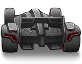
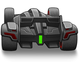
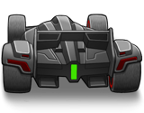
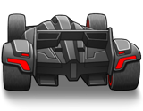
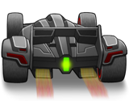
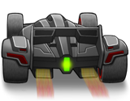
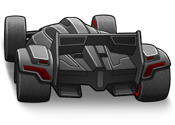
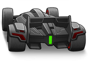
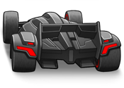
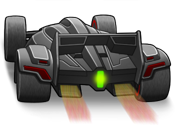
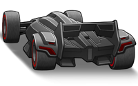
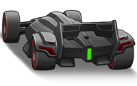
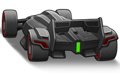
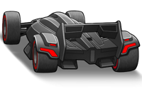
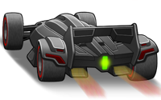
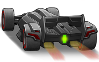
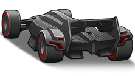
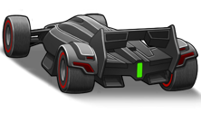
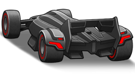
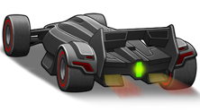
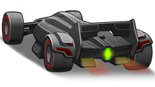
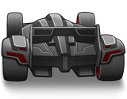
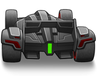
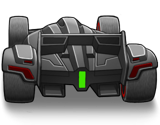
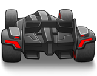
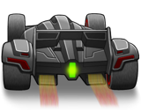
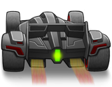
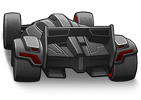
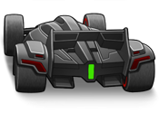
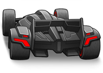
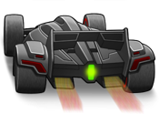
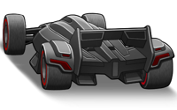
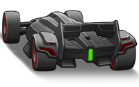
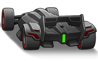
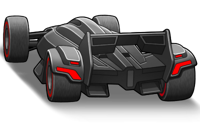
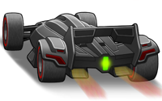
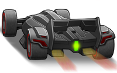
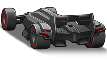
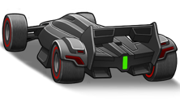
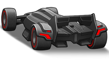
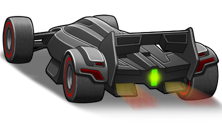
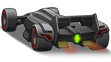


 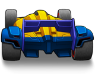
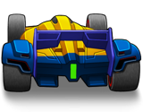
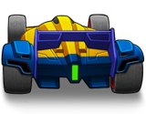
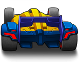
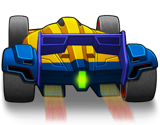
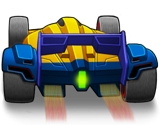
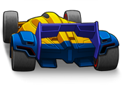
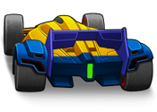
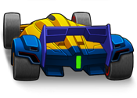
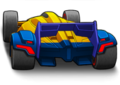
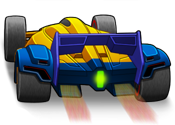
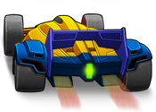
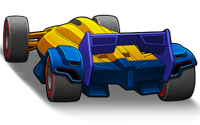
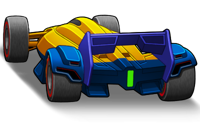
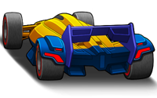
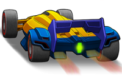
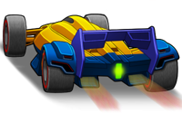
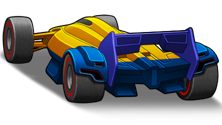
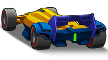
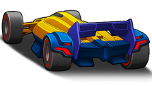
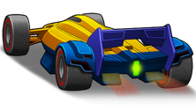
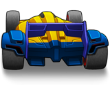
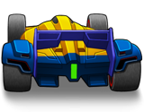
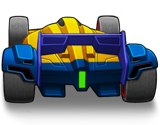
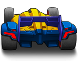
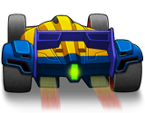
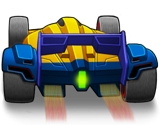
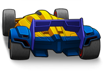
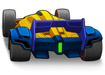
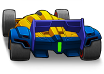
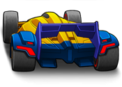
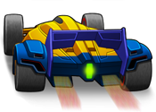
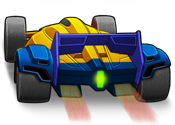
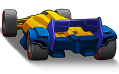
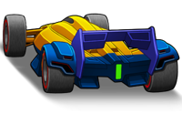
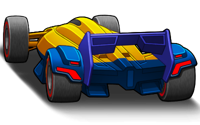
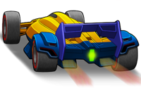
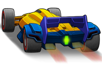
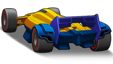
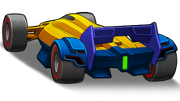
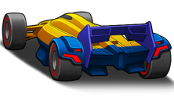
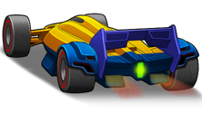


 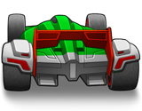
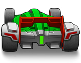
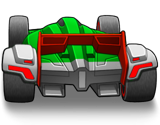
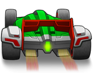
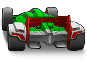
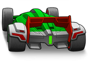
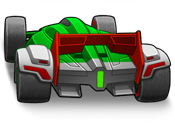
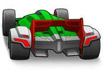
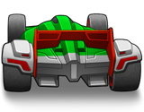
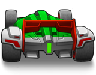
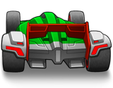
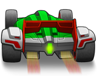
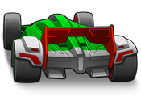
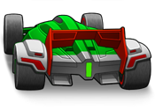
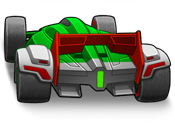
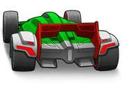


leadingedge
Attribution
Licensed under Creative Commons Attribution-NonCommercial-ShareAlike 3.0 Unported.
Original Python code
# Leading Edge - Code the Classics Volume 2
# Code by Andrew Gillett
# Graphics by Dan Malone
# Music and sound effects by Allister Brimble
# https://github.com/raspberrypipress/Code-the-Classics-Vol2.git
# https://store.rpipress.cc/products/code-the-classics-volume-ii
import pygame, pgzero, pgzrun, math, sys, time, platform
from abc import ABC, abstractmethod
from enum import Enum
from random import randint, uniform, choice
from pygame.math import Vector3, Vector2
# If the game window doesn't fit on the screen, you may need to turn off or reduce display scaling in the Windows/macOS settings
# On Windows, you can uncomment the following two lines to fix the issue. It sets the program as "DPI aware"
# meaning that display scaling won't be applied to it.
#import ctypes
#ctypes.windll.user32.SetProcessDPIAware()
# Enable this to use Pygame's 'gfxdraw' module for displaying polygons. This is faster in some older versions of Pygame,
# but in the latest version at the time of writing (2.2.0) it may actually be slightly slower than the default drawing
# module. See further down for more performance options
USE_GFXDRAW = False
if USE_GFXDRAW:
import pygame.gfxdraw
# Check Python version number. sys.version_info gives version as a tuple, e.g. if (3,7,2,'final',0) for version 3.7.2.
# Unlike many languages, Python can compare two tuples in the same way that you can compare numbers.
if sys.version_info < (3,6):
print("This game requires at least version 3.6 of Python. Please download it from www.python.org")
sys.exit()
# Check Pygame Zero version. This is a bit trickier because Pygame Zero only lets us get its version number as a string.
# So we have to split the string into a list, using '.' as the character to split on. We convert each element of the
# version number into an integer - but only if the string contains numbers and nothing else, because it's possible for
# a component of the version to contain letters as well as numbers (e.g. '2.0.dev0')
# This uses a Python feature called list comprehension
pgzero_version = [int(s) if s.isnumeric() else s for s in pgzero.__version__.split('.')]
if pgzero_version < [1,2]:
print(f"This game requires at least version 1.2 of Pygame Zero. You have version {pgzero.__version__}. Please upgrade using the command 'pip3 install --upgrade pgzero'")
sys.exit()
# For a better frame rate, try width/height of 640x480, or even lower
WIDTH = 960
HEIGHT = 540
TITLE = "Leading Edge"
# Set to True improve frame rate by turning off scenery, drawing unfilled polygons and changing the draw distance
PERFORMANCE_MODE = False
if not PERFORMANCE_MODE:
SHOW_SCENERY = True
SHOW_TRACKSIDE = True
SHOW_RUMBLE_STRIPS = True
SHOW_YELLOW_LINES = True
OUTLINE_W = 0 # Change to 1 for unfilled polygons, which are a bit faster to draw
VIEW_DISTANCE = 200 # This is in units of number of track pieces, try 60 for a better frame rate, try 2000 for a bad frame rate but impressive draw distance
else:
SHOW_SCENERY = False
SHOW_TRACKSIDE = False
SHOW_RUMBLE_STRIPS = False
SHOW_YELLOW_LINES = False
OUTLINE_W = 1 # Change to 1 for unfilled polygons, which are a bit faster to draw
VIEW_DISTANCE = 150 # This is in units of number of track pieces, try 60 for a better frame rate, try 2000 for a bad frame rate but impressive draw distance
CLIPPING_PLANE = -0.25 # too close to 0 = frame rate issues (drawing huge polygons which are mostly off-screen), too far = stuff just in front of camera not being drawn
CLIPPING_PLANE_CARS = -0.08 # bring closer to zero to fix occasional flickering of CPU cars when very close to the camera, at the potential cost of frame rate
SCALE_FUNC = pygame.transform.scale # Which scale function to use - pygame.transform.smoothscale is better quality but slower
MAX_SCENERY_SCALED_WIDTH = WIDTH * 2 # When scaling scenery based on distance from camera, don't try to draw anything that would be scaled to wider than this
MAX_CAR_SCALED_WIDTH = WIDTH * 1 # As above but for cars
# Constants for track
SPACING = 1
TRACK_W = 3000
HALF_STRIPE_W = 25
HALF_RUMBLE_STRIP_W = 250
HALF_YELLOW_LINE_W = 80
YELLOW_LINE_DISTANCE_FROM_EDGE = 150
TRACK_COLOUR = (35, 96, 198)
TRACKSIDE_COLOUR_1 = (0, 77, 180)
TRACKSIDE_COLOUR_2 = (50, 77, 170)
STRIPE_COLOUR = (70, 192, 255)
YELLOW_LINE_COL = (0, 161, 88) # Yes, it's actually green, not yellow. It looks yellow because it's night.
RUMBLE_COLOUR_1 = (0, 116, 255)
RUMBLE_COLOUR_2 = (0, 58, 135)
SECTION_VERY_SHORT = 25
SECTION_SHORT = 50
SECTION_MEDIUM = 100
SECTION_LONG = 200
LAMP_X = TRACK_W//2 + 300
BILLBOARD_X = TRACK_W//2 + 600
CAMERA_FOLLOW_DISTANCE = 2
# Player car gameplay settings
LOSE_GRIP_SPEED = 50
ZERO_GRIP_SPEED = 100
PLAYER_ACCELERATION_MAX = 20
PLAYER_ACCELERATION_MIN = 10
HIGH_ACCEL_THRESHOLD = 30
CORNER_OFFSET_MULTIPLIER = 5.8 # Higher = harder to corner
STEERING_STRENGTH = 72 # Higher = steering has a stronger effect
# Min/max CPU car target speeds - see also track generation, some track pieces have target speed overrides set
CPU_CAR_MIN_TARGET_SPEED = 40
CPU_CAR_MAX_TARGET_SPEED = 65
NUM_LAPS = 5
NUM_CARS = 20
GRID_CAR_SPACING = 0.55 # How spaced out the cars are on the starting grid
# Half-width and height used during point transform, to save having to calculate them each time
HALF_WIDTH = WIDTH // 2
HALF_HEIGHT = HEIGHT // 2
# Skid sound starts fading in when grip goes below this level
SKID_SOUND_START_GRIP = 0.8
# Debug options
SHOW_TRACK_PIECE_INDEX = False
SHOW_TRACK_PIECE_OFFSETS = False
SHOW_CPU_CAR_SPEEDS = False
SHOW_DEBUG_TEXT = False
SHOW_PROFILE_TIMINGS = False
FIXED_TIMESTEP = 1/60
# These symbols substitute for the controller button images when displaying text.
# The symbols representing these images must be ones that aren't actually used themselves, e.g. we don't use the
# percent sign in text
SPECIAL_FONT_SYMBOLS = {'xb_a':'%'}
# Create a version of SPECIAL_FONT_SYMBOLS where the keys and values are swapped
SPECIAL_FONT_SYMBOLS_INVERSE = dict((v,k) for k,v in SPECIAL_FONT_SYMBOLS.items())
# A black image whose alpha (transparency) we vary, to fade the screen to black during the title screen
fade_to_black_image = pygame.Surface((WIDTH, HEIGHT))
# Class used for timing how long certain bits of code take to run
class Profiler:
def __init__(self, name=""):
self.start_time = time.perf_counter()
self.name = name
def get_ms(self):
endTime = time.perf_counter()
diff = endTime - self.start_time
return diff * 1000
def __str__(self):
return f"{self.name}: {self.get_ms()}ms"
# Utility functions
def remap(old_val, old_min, old_max, new_min, new_max):
# todo explain
return (new_max - new_min)*(old_val - old_min) / (old_max - old_min) + new_min
def remap_clamp(old_val, old_min, old_max, new_min, new_max):
# todo explain
# These first two lines are in case new_min and new_max are inverted
lower_limit = min(new_min, new_max)
upper_limit = max(new_min, new_max)
return min(upper_limit, max(lower_limit, remap(old_val, old_min, old_max, new_min, new_max)))
def inverse_lerp(a, b, value):
# todo explain
if a != b:
return min(1, max(0, ((value - a) / (b - a))))
return 0
def sign(x):
# Returns 1, 0 or -1 depending on whether number is positive, zero or negative
if x == 0:
return 0
else:
return -1 if x < 0 else 1
def move_towards(n, target, speed):
if n < target:
return min(n + speed, target)
else:
return max(n - speed, target)
def format_time(seconds):
# Return time string in the form "minutes:seconds.milliseconds"
# 06.3f ensures that we always show 2 digits for the whole part of the seconds
# 6 refers to the total number of characters including the decimal point
# We want to display times like "1:05.123" not "1:5.123"
return f"{int(seconds // 60)}:{seconds % 60:06.3f}"
def get_char_image_and_width(char, font):
# Return width of given character. ord() gives the ASCII/Unicode code for the given character.
if char == " ":
return None, 30
else:
if char in SPECIAL_FONT_SYMBOLS_INVERSE:
image = getattr(images, SPECIAL_FONT_SYMBOLS_INVERSE[char])
else:
image = getattr(images, font + "0" + str(ord(char)))
return image, image.get_width()
TEXT_GAP_X = {"font":-6, "status1b_":0, "status2_":0} # Characters in main font are italic so should overlap a little
def text_width(text, font):
return sum([get_char_image_and_width(c, font)[1] for c in text]) + TEXT_GAP_X[font] * (len(text)-1)
def draw_text(text, x, y, centre=False, font="font"):
if centre:
x -= text_width(text, font) // 2
for char in text:
image, width = get_char_image_and_width(char, font)
if image is not None:
screen.blit(image, (x, y))
x += width + TEXT_GAP_X[font]
class Controls(ABC):
NUM_BUTTONS = 2
def __init__(self):
self.button_previously_down = [False for i in range(Controls.NUM_BUTTONS)]
self.is_button_pressed = [False for i in range(Controls.NUM_BUTTONS)]
def update(self):
# Call each frame to update button status
for button in range(Controls.NUM_BUTTONS):
button_down = self.button_down(button)
self.is_button_pressed[button] = button_down and not self.button_previously_down[button]
self.button_previously_down[button] = button_down
@abstractmethod
def get_x(self):
# Overridden by subclasses
pass
@abstractmethod
def button_down(self, button):
# Overridden by subclasses
pass
def button_pressed(self, button):
return self.is_button_pressed[button]
class KeyboardControls(Controls):
def get_x(self):
if keyboard.left:
return -1
elif keyboard.right:
return 1
else:
return 0
def button_down(self, button):
if button == 0:
return keyboard.lctrl or keyboard.z
elif button == 1:
return keyboard.lshift or keyboard.x
class JoystickControls(Controls):
def __init__(self, joystick):
super().__init__()
self.joystick = joystick
joystick.init() # Not necessary in Pygame 2.0.0 onwards
def get_axis(self, axis_num):
if self.joystick.get_numhats() > 0 and self.joystick.get_hat(0)[axis_num] != 0:
# For some reason, dpad up/down are inverted when getting inputs from
# an Xbox controller, so need to negate the value if axis_num is 1
return self.joystick.get_hat(0)[axis_num] * (-1 if axis_num == 1 else 1)
axis_value = self.joystick.get_axis(axis_num)
if abs(axis_value) < 0.6:
# Dead-zone
return 0
else:
return axis_value
def get_x(self):
return self.get_axis(0)
def get_y(self):
return self.get_axis(1)
def button_down(self, button):
# Before checking button, check to make sure that the controller actually has enough buttons
# There are some weird devices out there which could cause a crash if this check were not present
if self.joystick.get_numbuttons() <= button:
print("Warning: main controller does not have enough buttons!")
return False
return self.joystick.get_button(button) != 0
class Scenery:
def __init__(self, x, image, min_draw_distance=0, max_draw_distance=VIEW_DISTANCE // 2, scale=1, collision_zones=()):
self.x = x
self.image = image
self.min_draw_distance = min_draw_distance
self.max_draw_distance = max_draw_distance
self.scale = scale
self.collision_zones = collision_zones
def get_image(self):
return self.image
class StartGantry(Scenery):
def __init__(self):
super().__init__(0, images.start0, min_draw_distance=1, max_draw_distance=VIEW_DISTANCE, scale=4, collision_zones=((-3000,-2400),(2400,3000)))
def get_image(self):
# Before we draw, update our billboard image to the appropriate one based on the game's start timer
# Images go from start0 to start4, then we alternate between start4 and start5 every half second
if game.start_timer > 0:
index = int(remap(game.start_timer, 4, 0, 0, 4))
else:
index = 4 if int(game.timer * 2) % 2 == 0 else 5
image = "start" + str(index)
self.image = getattr(images, image)
return self.image
class Billboard(Scenery):
def __init__(self, x, image):
half_width = image.get_width() / 2
scale = 2
super().__init__(x, image, scale=scale, collision_zones=((-half_width*scale,half_width*scale),))
class LampLeft(Scenery):
def __init__(self):
super().__init__(LAMP_X, images.left_light, scale=2, collision_zones=((350,1200),))
class LampRight(Scenery):
def __init__(self):
super().__init__(-LAMP_X, images.right_light, scale=2, collision_zones=((-1200,-350),))
# The track is defined as list of track pieces. A track piece is technically just a line, but a polygon will be
# drawn to connect it to the next piece. So being 'on' a track piece means being in between that track piece and the
# next one. Each track piece has X and Y offsets, which define how its position differs from the previous piece.
# When the track is drawn, the changes in offset accumulate, so that a series of track pieces with X offsets of 10
# will lead to a curve to the left, from the camera's point of view. (Left rather than right because the camera
# points along the negative Z axis)
# The X and Y offsets are the offsets from the previous track piece, so if, for example, track pieces 0 to 5 have an
# X offset of zero and track piece 6 has a very large offset of 1000, it's while moving from 5 to 6 that the car
# will start to move to the left
class TrackPiece:
def __init__(self, scenery=(), offset_x=0, offset_y=0, cpu_max_target_speed=None, col=TRACK_COLOUR, width=TRACK_W):
self.scenery = scenery
self.offset_x = offset_x
self.offset_y = offset_y
self.cpu_max_target_speed = cpu_max_target_speed
self.col = col
self.width = width
self.cars = [] # Cars currently on this track piece
class TrackPieceStartLine(TrackPiece):
def __init__(self):
super().__init__(scenery = [StartGantry()], col=(255,255,255))
class Car:
def __init__(self, pos, car_letter):
self.pos = pos
self.image = f"car_{car_letter}_0_0"
self.speed = 0
self.grip = 1
self.car_letter = car_letter
self.track_piece = None
self.tyre_rotation = 0
def update(self, delta_time):
self.pos.z -= self.speed * delta_time
self.update_current_track_piece()
self.tyre_rotation += delta_time * self.speed * 0.75
def update_current_track_piece(self):
# Which track piece are we on?
current_track_piece = self.track_piece
idx = game.get_track_piece_for_z(self.pos.z)
if idx is not None:
self.track_piece = game.track[idx]
if self.track_piece is not current_track_piece:
# Remove myself from the old track piece, add myself to the new one
if current_track_piece is not None:
current_track_piece.cars.remove(self)
self.track_piece.cars.append(self)
def update_sprite(self, angle, braking, boost=False):
if self.speed == 0:
frame = 0
elif braking:
frame = 3
elif boost:
frame = int(self.tyre_rotation % 2) + 4
else:
frame = int(self.tyre_rotation % 2) + 1
self.image = f"car_{self.car_letter}_{angle}_{frame}"
class CPUCar(Car):
def __init__(self, pos, accel, speed):
super().__init__(pos, choice(('b','c','d','e')))
# CPU cars accelerate faster than player but have a lower top speed
self.accel = PLAYER_ACCELERATION_MAX * accel
self.target_speed = speed
self.target_x = pos.x
# Set based on track curvature, so we can display an angled variant of the car sprite
self.steering = 0
self.change_speed_timer = uniform(2, 4)
def update(self, delta_time):
if game.race_complete:
self.target_speed = game.player_car.speed
self.speed = move_towards(self.speed, self.target_speed, self.accel * delta_time)
self.pos.x = move_towards(self.pos.x, self.target_x, 400 * delta_time)
super().update(delta_time)
track_piece_idx, _ = game.get_first_track_piece_ahead(self.pos.z)
if track_piece_idx is not None:
self.steering = game.track[track_piece_idx].offset_x
# Every few seconds we'll change target speed by a random amount, but upwards on average, so that slow cars
# have a chance to catch up, and so that we can see CPU cars overtaking each other
self.change_speed_timer -= delta_time
if self.change_speed_timer <= 0 and not game.race_complete:
self.target_speed += uniform(-4, 6)
self.target_speed = min(max(self.target_speed, CPU_CAR_MIN_TARGET_SPEED), CPU_CAR_MAX_TARGET_SPEED)
# If we're on a sharp corner and speed is above a certain level, reduce target speed
if track_piece_idx is not None:
target_speed_override = game.track[track_piece_idx].cpu_max_target_speed
if target_speed_override is not None and self.target_speed > target_speed_override:
# Make it slightly random
self.target_speed = uniform(target_speed_override-3, target_speed_override)
# Also change target X pos to a random value
# Ensure not too close to values for nearby cars, to avoid cars driving through each other
def is_target_x_too_close_to_nearby_cars():
for car in game.cars:
if car is not self and abs(self.pos.z - car.pos.z) < 20 and abs(self.target_x - car.pos.x) < 300:
return True
return False
# Limit number of attempts to ensure no chance of infinite loop
for attempt in range(0,20):
self.target_x = uniform(-1000, 1000)
if not is_target_x_too_close_to_nearby_cars():
break
# Reset timer
self.change_speed_timer = uniform(2, 4)
class PlayerCar(Car):
def __init__(self, pos, controls):
super().__init__(pos, 'a')
self.pos = pos
self.controls = controls
self.offset_x_change = 0
self.resetting = False
self.explode_timer = None
self.last_checkpoint_idx = None
self.lap = 1
self.lap_time = 0
self.race_time = 0
self.fastest_lap = None
self.last_lap_was_fastest = False
self.braking = False
# Load engine and skid sounds. These are not played with Game.play_sound as they require custom behaviour.
# Enclosed in a try/except section to deal with the case where the sound files can't be loaded, which can
# occur if there is no sound hardware or sound is disabled
try:
self.engine_sounds = [getattr(sounds, "engine_short" + str(i)) for i in range(40)]
self.skid_sound = sounds.skid_loop0
except Exception:
self.engine_sounds = []
self.skid_sound = None
self.current_engine_sound = None
self.current_engine_sound_idx = -1
self.update_engine_sound()
self.skid_sound_playing = False
self.grass_sound_repeat_timer = 0
self.on_grass = False
# Last known position in the race, indexed from 0 - used to decide when to play overtaking sounds
self.prev_position = NUM_CARS - 1
def stop_engine_sound(self):
if self.current_engine_sound is not None:
try:
self.current_engine_sound.stop()
except Exception:
# Ignore errors - e.g. no sound hardware, or sound mixer has been shut down
pass
def update(self, delta_time):
if not game.race_complete:
self.lap_time += delta_time
self.race_time += delta_time
self.grass_sound_repeat_timer -= delta_time
self.update_engine_sound()
# Play overtaking sounds? See if our position in the race has changed since last frame
current_position = game.cars.index(self)
if current_position != self.prev_position:
# Only play sound if speed difference is high enough
if abs(self.speed - game.cars[self.prev_position].speed) > 4:
game.play_sound("overtake",6)
self.prev_position = current_position
if self.resetting:
if self.explode_timer is not None:
self.explode_timer += 1
if self.explode_timer > 31:
self.explode_timer = None
else:
# Reset player to centre of track over about 2 seconds
self.pos.x = move_towards(self.pos.x, 0, 2000 * delta_time)
self.resetting = self.pos.x != 0
x_move = 0
accel = 0
if not self.resetting:
# Not resetting - do normal movement & controls
self.braking = False
# Only get control inputs if race is not complete
if not game.race_complete:
self.controls.update()
if self.controls.button_down(0):
accel = PLAYER_ACCELERATION_MAX if self.speed < HIGH_ACCEL_THRESHOLD else PLAYER_ACCELERATION_MIN
self.speed += accel * delta_time
elif self.controls.button_down(1):
# Brake
self.braking = True
self.speed = max(0, self.speed - delta_time * 10)
# Apply drag in a frame-rate independent way
drag_factor = 0.9975
if self.on_grass:
# More drag on grass
drag_factor -= 0.0025
# Apply drag to speed. ** = power, e.g. 3 ** 5 is 3 to the power of 5
# Check out this superb video which explains the uses and misuses of delta times, including more advanced
# uses as seen in this case: https://www.youtube.com/watch?v=yGhfUcPjXuE
self.speed *= drag_factor ** (delta_time / (1 / 60))
# If we're going round a corner, shift X pos so that failing to steer will take you off the track
# This is necessary because in this game, the corners are just illusions!
if self.offset_x_change != 0:
# We also set self.grip to less than 1 if we're cornering at high speed (but only if we're steering
# in same direction as corner)
if self.speed > LOSE_GRIP_SPEED and sign(self.get_x_input()) == -sign(self.offset_x_change):
self.grip = remap_clamp(self.speed, LOSE_GRIP_SPEED, ZERO_GRIP_SPEED, 1, 0)
else:
self.grip = 1
# Apply corner offset - grip will be used to alter steering movement in Car.update
# We don't multiply by delta_time here as offset_x_change is partly based on the total amount of forward
# motion that has taken place since the previous frame, which already takes delta_time into account
# We don't do this if the race is complete - just let car go around the corners with no steering needed
if not game.race_complete:
self.pos.x -= self.offset_x_change * CORNER_OFFSET_MULTIPLIER
else:
# Not going around a corner
self.grip = 1
# Get track piece we were on before forward motion was applied
previous_track_piece_idx, _ = game.get_first_track_piece_ahead(self.pos.z)
# Apply steering
if self.speed > 0 and not game.race_complete:
x_move = self.get_x_input() * self.speed * STEERING_STRENGTH * self.grip * delta_time
self.pos.x -= x_move
# Call parent (Car) update method, which includes applying motion
super().update(delta_time)
# Check for collisions with other cars
for car in game.cars:
if car is not self:
# Note - axes are not uniform in scale (1 unit in X axis is much smaller than 1 unit in Z axis),
# so we can't do a normal distance calculation.
# Instead we just check X and Z differences separately (Y is irrelevant as cars are always
# on the ground)
vec = self.pos - car.pos
COLLIDE_FRONT_DISTANCE_Z = 0.6
COLLIDE_BACK_DISTANCE_Z = 1.2
if abs(vec.x) < 260 and vec.z < COLLIDE_FRONT_DISTANCE_Z and vec.z > -COLLIDE_BACK_DISTANCE_Z:
midpoint = (self.pos.z - car.pos.z) / 2 + car.pos.z
# Which side did we collide on?
# An alternative way to do this would be to use the speed difference, e.g. if player speed
# is faster, we hit the car in front
if abs(vec.z) < 0.2:
# Side collision
self.pos.x += sign(vec.x) * 50
car.pos.x -= sign(vec.x) * 50
elif vec.z > 0:
# Colliding with the back of the car in front
self.speed = max(car.speed - 3, 0)
car.speed = max(car.speed, self.speed + 3)
car.target_speed = car.speed
# Shift us back and other car forward so we're not longer overlapping
self.pos.z = midpoint + COLLIDE_FRONT_DISTANCE_Z * 0.6
car.pos.z = midpoint - COLLIDE_FRONT_DISTANCE_Z * 0.6
game.play_sound("bump", 6)
else:
# Car behind collided with us - get a speed boost
self.speed = max(self.speed, car.speed + 3)
car.speed = max(self.speed - 3, 0)
# Shift other car back and us forward so we're not longer overlapping
self.pos.z = midpoint - COLLIDE_BACK_DISTANCE_Z * 0.6
car.pos.z = midpoint + COLLIDE_BACK_DISTANCE_Z * 0.6
game.play_sound("bump_behind")
# Check for collisions with scenery, driving on grass and passing a checkpoint
track_piece_idx, _ = game.get_first_track_piece_ahead(self.pos.z)
if track_piece_idx is not None:
track_piece = game.track[track_piece_idx]
for scenery in track_piece.scenery:
for collision_zone in scenery.collision_zones:
zone_left = scenery.x + collision_zone[0]
zone_right = scenery.x + collision_zone[1]
if zone_left < self.pos.x < zone_right:
self.speed = 0
self.resetting = True
self.explode_timer = 0 # Start explosion animation
game.play_sound("explosion")
# Are we on, or have we passed, a checkpoint?
for i in range(previous_track_piece_idx, track_piece_idx+1):
if isinstance(game.track[i], TrackPieceStartLine):
# It's a checkpoint. If it's the first one, ignore it (passing the start line at the start of
# the race is not of interest). If we've already dealt with this checkpoint, ignore it.
# Otherwise update lap count and lap time
if self.last_checkpoint_idx is not None and self.last_checkpoint_idx != i:
self.lap += 1
# Was this the fastest lap?
if self.fastest_lap is None or self.lap_time < self.fastest_lap:
self.fastest_lap = self.lap_time
self.last_lap_was_fastest = True
game.play_sound("fastlap")
else:
self.last_lap_was_fastest = False
# Play final lap sound effect?
if self.lap == NUM_LAPS:
game.play_sound("final_lap")
# Set lap time back to 0 for new lap
self.lap_time = 0
self.last_checkpoint_idx = i
# Are we on the grass?
if abs(self.pos.x) + 100 > track_piece.width / 2:
self.on_grass = True
if self.grass_sound_repeat_timer <= 0:
game.play_sound("hit_grass")
self.grass_sound_repeat_timer = 0.15
# Are we way too far off the track? Reset if so
if abs(self.pos.x) > 6000:
self.speed = 0
self.resetting = True
else:
self.on_grass = False
# End of "if not self.resetting" block
# Depending on grip, turn skid sound on/off or vary volume
if self.skid_sound is not None:
# Determine volume to play skid sound at
if self.resetting or self.grip >= SKID_SOUND_START_GRIP or self.get_x_input() == 0:
volume = 0
else:
volume = remap_clamp(self.grip, SKID_SOUND_START_GRIP, 0.5, 0, 1)
# Scale volume based on track curvature - higher volume for tighter corners
if track_piece_idx is not None:
track_piece = game.track[track_piece_idx]
volume *= remap_clamp(abs(track_piece.offset_x), 0, 15, 0, 1)
if volume > 0:
if not self.skid_sound_playing:
self.skid_sound.play(loops=-1, fade_ms=100) # Loop indefinitely
self.skid_sound_playing = True
self.skid_sound.set_volume(volume)
else:
self.skid_sound_playing = False
self.skid_sound.fadeout(250)
# Set sprite
if self.explode_timer is not None:
self.image = f"explode{self.explode_timer//2:02}"
else:
direction = 0
if x_move < 0:
direction = -1
elif x_move > 0:
direction = 1
boost = accel > 0 and self.speed < HIGH_ACCEL_THRESHOLD and self.speed > 0
self.update_sprite(direction, self.braking, boost)
def update_engine_sound(self):
sound_index = min(int(self.speed * 0.6), len(self.engine_sounds) - 1)
if sound_index != self.current_engine_sound_idx:
self.current_engine_sound_idx = sound_index
old_sound = self.current_engine_sound
self.current_engine_sound = self.engine_sounds[sound_index]
self.current_engine_sound.set_volume(0.3)
# Stop the old sound and play the new sound - ignore errors (e.g. no sound hardware)
try:
if old_sound is not None:
old_sound.fadeout(150)
self.current_engine_sound.play(loops=-1, fade_ms=100)
except Exception:
pass
def get_x_input(self):
return self.controls.get_x()
def set_offset_x_change(self, value):
self.offset_x_change = value
def generate_scenery(track_i, image=images.billboard00, interval=40, lamps=True):
if track_i % interval == 0:
# Billboards
return [Billboard(BILLBOARD_X, image), Billboard(-BILLBOARD_X, image)]
elif lamps and track_i % 30 == 0:
# Lamps
return [LampLeft(), LampRight()]
else:
return []
def make_track():
# Each track piece in the list represents a line with a particular width, with optional attached scenery.
# When the track is drawn, we draw a polygon for each track piece, connecting this line with the line of the
# previous track piece.
track = []
for lap in range(NUM_LAPS + 1):
track.extend([TrackPiece(scenery=generate_scenery(i,images.billboard02)) for i in range(15)])
# Start gantry
track.append(TrackPieceStartLine())
track.extend([TrackPiece() for i in range(SECTION_SHORT)])
# Because the camera is pointing down the negative Z axis, negative/positive X mean right/left from
# camera's perspective
# Mild right turn followed by short straight
track.extend([TrackPiece(offset_x=-4, offset_y=0, scenery=generate_scenery(i)) for i in range(SECTION_MEDIUM)])
track.extend([TrackPiece(scenery=generate_scenery(i,images.billboard01)) for i in range(SECTION_SHORT)])
# Slight downward slope, going into moderate right hand turn
track.extend([TrackPiece(offset_x=0, offset_y=-1, scenery=generate_scenery(i)) for i in range(SECTION_VERY_SHORT)])
track.extend([TrackPiece(offset_x=0, offset_y=-2, scenery=generate_scenery(i)) for i in range(SECTION_VERY_SHORT)])
track.extend([TrackPiece(offset_x=-2, offset_y=-1, scenery=generate_scenery(i)) for i in range(SECTION_VERY_SHORT)])
track.extend([TrackPiece(offset_x=-5, offset_y=0, scenery=generate_scenery(i,images.billboard03)) for i in range(SECTION_VERY_SHORT)])
track.extend([TrackPiece(offset_x=-10, offset_y=0, scenery=generate_scenery(i,images.billboard03)) for i in range(SECTION_MEDIUM)])
# Short straight
track.extend([TrackPiece(scenery=generate_scenery(i)) for i in range(SECTION_SHORT)])
# Medium-sharp turn left, slight upward slope
track.extend([TrackPiece(offset_x=13, offset_y=1, scenery=generate_scenery(i, images.arrow_left, interval=10)) for i in range(SECTION_MEDIUM)])
track.extend([TrackPiece(offset_x=0, offset_y=0, scenery=generate_scenery(i,images.billboard02)) for i in range(SECTION_MEDIUM)])
# Small hill
track.extend([TrackPiece(offset_x=0, offset_y=2, scenery=generate_scenery(i,images.billboard02)) for i in range(SECTION_MEDIUM)])
# Slightly down and to the right
track.extend([TrackPiece(offset_x=-3, offset_y=-1, scenery=generate_scenery(i,images.billboard01)) for i in range(SECTION_LONG)])
# Crazy downward curve
track.extend([TrackPiece(offset_x=0, offset_y=-4, scenery=generate_scenery(i)) for i in range(SECTION_MEDIUM)])
# Upward slope
track.extend([TrackPiece(offset_x=0, offset_y=2, scenery=generate_scenery(i,images.billboard03)) for i in range(SECTION_LONG)])
# Turn to left and up, gradually increasing curve
for j in range(1,10):
track.extend([TrackPiece(offset_x=j, offset_y=j, scenery=generate_scenery(i)) for i in range(SECTION_VERY_SHORT)])
# Downward curve, increasing then decreasing in intensity
for j in range(1,10):
track.extend([TrackPiece(offset_x=0, offset_y=-j, scenery=generate_scenery(i)) for i in range(SECTION_VERY_SHORT)])
# straight with chevron billboards at end, CPU cars will slow down in this section
track.extend([TrackPiece(cpu_max_target_speed=60, scenery=[]) for i in range(SECTION_MEDIUM)])
track.extend([TrackPiece(cpu_max_target_speed=58, scenery=generate_scenery(i, images.arrow_right, interval=10, lamps=False)) for i in range(SECTION_SHORT)])
track.extend([TrackPiece(cpu_max_target_speed=58, scenery=generate_scenery(i, images.arrow_right, interval=10, lamps=False)) for i in range(SECTION_SHORT)])
# sharp turn right, easing off slightly at end
track.extend([TrackPiece(offset_x=-15, cpu_max_target_speed=55, scenery=generate_scenery(i, images.arrow_right, interval=10, lamps=False)) for i in range(SECTION_SHORT)])
track.extend([TrackPiece(offset_x=-13, cpu_max_target_speed=57, scenery=generate_scenery(i, images.arrow_right, interval=10, lamps=False)) for i in range(SECTION_SHORT)])
track.extend([TrackPiece(offset_x=-11, offset_y=0, scenery=generate_scenery(i)) for i in range(SECTION_SHORT)])
track.extend([TrackPiece(offset_x=-9, offset_y=0, scenery=generate_scenery(i)) for i in range(SECTION_SHORT)])
# straight
track.extend([TrackPiece(offset_x=0, offset_y=0, scenery=generate_scenery(i)) for i in range(SECTION_MEDIUM)])
# cosine hills
track.extend([TrackPiece(offset_y=math.cos(i/20) * 5, scenery=generate_scenery(i)) for i in range(SECTION_LONG)])
# Mild upward slope - the purpose is to reset the Y scrolling of the background so it roughly matches the
# background position at the start of the lap
track.extend([TrackPiece(offset_x=0, offset_y=0.25, scenery=generate_scenery(i,images.billboard03)) for i in range(SECTION_LONG)])
# short straight
track.extend([TrackPiece(offset_x=0, offset_y=0, scenery=generate_scenery(i,images.billboard03)) for i in range(SECTION_SHORT)])
return track
class Game:
def __init__(self, controls=None):
self.track = make_track()
# We only create a player car (in setup_cars) when there is a controls object
self.player_car = None
self.camera_follow_car = None
self.setup_cars(controls)
self.camera = Vector3(0, 400, 0)
self.background = images.background
self.bg_offset = Vector2(-self.background.get_width() // 2, 30)
self.first_frame = True
self.on_screen_debug_strs = []
self.frame_counter = 0
self.timer = 0
self.race_complete = False
self.time_up = False
if self.player_car is not None:
self.start_timer = 3.999
play_music("engines_startline")
else:
# Race starts immediately on title screen
self.start_timer = 0
def setup_cars(self, controls):
self.cars = [] # Will be kept in sorted order of position
for i in range(NUM_CARS):
z = -3 - i * GRID_CAR_SPACING
x = -400 if i % 2 == 0 else 400
if i == 0 and controls is not None:
# Don't create player car on title screen
self.player_car = PlayerCar(Vector3(x, 0, z), controls)
self.cars.append(self.player_car)
else:
target_speed = remap(i, 0, NUM_CARS - 1, CPU_CAR_MIN_TARGET_SPEED, CPU_CAR_MAX_TARGET_SPEED)
accel = remap(i, 0, NUM_CARS - 1, 1.5, 2)
self.cars.append(CPUCar(Vector3(x, 0, z), speed=target_speed, accel=accel))
if self.player_car is not None:
self.camera_follow_car = self.player_car
else:
self.camera_follow_car = self.cars[0]
def update(self, delta_time):
self.timer += delta_time
self.frame_counter += 1
# Race start sequence
if self.start_timer > 0:
# Ensure cars are added to the appropriate track piece's car list, so that
# they're displayed during the start countdown (during which time their update is not called)
for car in self.cars:
car.update_current_track_piece()
timer_old = self.start_timer
self.start_timer = max(0, self.start_timer - delta_time)
# Every second of the countdown, make a sound effect
if self.start_timer == 0:
# Go!
# Ambience is stereo so is treated as music
play_music("ambience")
game.play_sound("gobeep")
elif int(timer_old) != int(self.start_timer):
game.play_sound("startbeep")
old_camera_z = self.camera.z
prev_ahead, _ = self.get_first_track_piece_ahead(old_camera_z)
# If race has started, update all cars
if self.start_timer == 0:
for car in self.cars:
car.update(delta_time)
# Is the race complete?
if not self.race_complete and self.player_car is not None :
# End the game if lap time reaches 4 mins
# This serves two purposes:
# 1) Prevent lap time text from overflowing its area (would happen after 10 mins)
# 2) If the game is being demoed in public, and someone starts playing and then leaves before finishing
# a race, the game will eventually end so that the next player can start a fresh race without having
# to quit and re-run the game
# Also allow player to end the game by pressing Escape
if self.player_car.lap_time >= 60 * 4 or keyboard.escape:
stop_music()
self.time_up = True
self.race_complete = True
elif self.player_car.lap > NUM_LAPS:
stop_music()
self.race_complete = True
self.play_sound("game_complete")
# Sort cars in the list based on race positions
self.cars.sort(key=lambda car: car.pos.z)
# Update camera position to follow player car
self.camera.x = self.camera_follow_car.pos.x
self.camera.z = self.camera_follow_car.pos.z + CAMERA_FOLLOW_DISTANCE
# As camera moves around corners, add to bg_offset and shift car X position so that steering is required on corners
# Get the new camera pos and determine which track piece it's on. The logic is different depending on whether
# the position change goes from one track piece to the next, or is within one track piece
new_camera_z = self.camera.z
new_ahead, _ = self.get_first_track_piece_ahead(new_camera_z)
# We need to deal with not just interpolating during movement within one track piece, but also when we pass the
# boundary of a track piece.
# We need to know how far the camera has travelled since the start of the frame and work out which portion of the
# movement covers which track piece.
# It's also possible for the movement to be across more than two track pieces.
# Example
# track i z offset_x
# 5 -5 0
# 6 -6 1000
# 7 -7 0
# Car start Z = -5 First track piece ahead = 5 (offset 0)
# Car end Z = -5.5 First track piece ahead = 6 (offset 1000)
# Offset change = 500
# Car start Z = -5.4 First track piece ahead = 6 (offset 1000)
# Car end Z = -5.5 First track piece ahead = 6 (offset 1000)
# Offset change = 100
# Car start Z = -5 First track piece ahead = 5 (offset 0)
# Spans whole of piece 6 (offset 1000)
# Car end Z = -6.1 First track piece ahead = 7 (offset 0)
# Offset change = 1000
# Car start Z = -5.001 First track piece ahead = 6 (offset 1000)
# Car end Z = -6.1 First track piece ahead = 7 (offset 0)
# Offset change = 999.9
# Get distance from here to next SPACING increment or new camera z, whichever is a smaller change (higher number)
# Ignore if camera moved backwards (debug camera only), or the camera is before the start of the track
# Don't do this on first frame, as camera won't have its correct initial Z position at the beginning of the frame
distance = old_camera_z - new_camera_z
offset_change = Vector2(0, 0)
if distance > 0 and not self.first_frame and prev_ahead >= 0 and new_ahead >= 0:
old_z_next_spacing_boundary = (old_camera_z // SPACING) * SPACING
new_z_prev_spacing_boundary = ((new_camera_z // SPACING) * SPACING) + SPACING
prev_track = self.track[prev_ahead]
new_track = self.track[new_ahead]
if new_ahead > prev_ahead:
# Movement touches at least two track pieces
# Figure out how much of the movement was within the old and new track pieces, plus whether there
# are any intermediate track pieces between them (whose offsets will be fully applied)
# What proportion of the old and new track pieces have we covered?
distance_first = old_camera_z - old_z_next_spacing_boundary
distance_last = new_z_prev_spacing_boundary - new_camera_z
fraction_first = distance_first / SPACING
fraction_last = distance_last / SPACING
# assert stops the program with an AssertionError if the specified condition is false. Both fractions
# should always be between zero and one, and if they aren't then we want to know about it. This assertion
# may trigger with very low values of SPACING, possibly due to floating point inaccuracy.
assert (0 <= fraction_first <= 1 and 0 <= fraction_last <= 1)
offset_change = Vector2(prev_track.offset_x, prev_track.offset_y) * fraction_first \
+ Vector2(new_track.offset_x, new_track.offset_y) * fraction_last
# If difference between prev_ahead and new_ahead is more than 1, that means the movement involves
# three or more track pieces. We will have passed 100% of each of the in-between track pieces, so we
# fully add their offsets
if new_ahead - prev_ahead > 1:
for i in range(prev_ahead + 1, new_ahead):
piece = self.track[i]
offset_change += Vector2(piece.offset_x, piece.offset_y)
else:
# Movement was just within one track piece
fraction = distance / SPACING
assert(0 <= fraction <= 1)
offset_change = Vector2(prev_track.offset_x, prev_track.offset_y) * fraction
# Shift background by the calculated offset
self.bg_offset += offset_change
# Keep bg_offset.x within the range -backgroundwidth to +backgroundwidth
while self.bg_offset.x < -self.background.get_width():
self.bg_offset.x += self.background.get_width()
while self.bg_offset.x > self.background.get_width():
self.bg_offset.x -= self.background.get_width()
# Shift player car's X offset - this means the car will go off the track if you go around a corner without
# steering. Without this, the car would magically stick to the track as if the corner wasn't there - because
# the curvature is really just a visual effect!
if self.player_car is not None:
self.player_car.set_offset_x_change(offset_change.x)
# This deals with moving the background when the camera is moving backwards, which will only happen if the
# player uses the down arrow key debug mode
if new_ahead < prev_ahead:
self.bg_offset.x -= self.track[prev_ahead].offset_x
self.bg_offset.y -= self.track[prev_ahead].offset_y
self.first_frame = False
def draw(self):
# Fill background with single colour
# We use a different background colour depending on the Y offset of the background image, because
# the top and bottom of that image are different colours
if self.bg_offset.y > 0:
screen.fill( (0,20,117) )
else:
screen.fill( (0,77,180) )
# Profiling times
times = {"scenery_scale": 0, "car_scale": 0, "prepare_draw_cars": 0}
# Draw background
# Need to draw either one or two backgrounds - second copy is for wrapping (when bg_offset.x changes enough that
# we'd see the edge of the image)
profile_bg = Profiler()
self.on_screen_debug_strs.append(str(self.bg_offset))
screen.blit(self.background, self.bg_offset)
if self.bg_offset.x > 0:
screen.blit(self.background, self.bg_offset - Vector2(self.background.get_width(), 0))
if self.bg_offset.x + self.background.get_width() < WIDTH:
screen.blit(self.background, self.bg_offset + Vector2(self.background.get_width(), 0))
times["bg"] = profile_bg.get_ms()
def transform(point_v3, w=None, h=None, clipping_plane=CLIPPING_PLANE):
# This local function receives a point as a Vector3 and transforms it into a Vector2 point in screen space
# When called for a car or scenery item, w and h are specified, referring to the size of the original
# sprite, so it also calculates and returns the scaled width and height, based on the distance from the camera
newpoint = point_v3 - self.camera
if newpoint.z > clipping_plane:
return None if w is None else (None, None, None)
# Apply perspective and centre on the screen
point_v2 = pygame.math.Vector2((newpoint.x / newpoint.z) + HALF_WIDTH,
(newpoint.y / newpoint.z) + HALF_HEIGHT)
if w is None:
return point_v2
else:
return point_v2, w / -newpoint.z, h / -newpoint.z
# offset and offset_delta keep track of the cumulative changes in track offsets (X and Y - Z remains as 0), so
# that each track piece is drawn in the correct position
offset = Vector3(0, 0, 0)
offset_delta = Vector3(0, 0, 0)
# Tuples of pairs of Vector2s storing screen positions of left and right edges of the track, central
# stripes and left/right rumble strips. We remember them so they don't need to be recalculated when joining up
# a track piece or stripe with the previous one
prev_track_screen = None
prev_stripe_screen = None
prev_rumble_left_outer_screen = None
prev_rumble_right_outer_screen = None
# Instead of drawing track pieces etc as we come across them, we store draw calls in this list. Then we once
# we've finished going through track pieces, we execute the draw calls in reverse order, so that track
# pieces, cars and scenery in the distance are drawn before things which are closer
draw_list = []
def add_to_draw_list(drawcall, type="?"):
draw_list.append((drawcall, type))
is_first_track_piece_ahead = True
prof_track = Profiler("track")
# Get index of first track piece that starts at or just in front of the camera Z position
# This means the track piece we're currently part-way through won't be displayed, but that doesn't matter
# as it would be off the bottom of the camera.
first_track_piece_idx, current_piece_z = self.get_first_track_piece_ahead(self.camera.z)
# Index of the track piece that we're drawing, relative to first_track_piece_idx
track_ahead_i = 0
# At the start of the loop body below, we subtract SPACING from current_piece_z. Therefore we must add SPACING
# before the loop so that current_piece_z is correct for the first track piece.
current_piece_z += SPACING
# Go through each track piece ahead
for i in range(first_track_piece_idx, len(self.track)):
# Stop when we've displayed VIEW_DISTANCE number of track pieces
track_ahead_i += 1
if track_ahead_i > VIEW_DISTANCE:
break
track_piece = self.track[i]
current_piece_z -= SPACING
# Because the camera is pointing down the negative Z axis, negative/positive X mean right/left from
# camera's perspective
left = Vector3(track_piece.width / 2, 0, current_piece_z)
right = Vector3(-track_piece.width / 2, 0, current_piece_z)
# Interpolate for X offset between first and next track piece. Without this, going around corners would
# look very juddery
if is_first_track_piece_ahead:
# Get fraction between this and next
# Current track piece is actually the first track piece IN FRONT of Z
# And next is the one after that
# So to find the fraction we need to add spacing
adjusted_camera_z = self.camera.z - SPACING
fraction = inverse_lerp(current_piece_z - SPACING, current_piece_z, adjusted_camera_z)
offset_delta = Vector3(fraction * track_piece.offset_x, fraction * track_piece.offset_y, 0)
else:
offset_delta += Vector3(track_piece.offset_x, track_piece.offset_y, 0)
is_first_track_piece_ahead = False
offset += offset_delta
left += offset
right += offset
# Calculate screen positions of track boundaries
left_screen = transform(left)
right_screen = transform(right)
# Calculate screen pos of central stripe
# Always work out stripe points even for pieces which don't need them, because the next track piece may
# make use of the calculated points to connect up to
stripe_left = Vector3(HALF_STRIPE_W, 0, current_piece_z) + offset
stripe_right = Vector3(-HALF_STRIPE_W, 0, current_piece_z) + offset
stripe_left_screen = transform(stripe_left)
stripe_right_screen = transform(stripe_right)
# Calculate screen pos of outer parts of left/right rumble strips (can just use left/right track positions
# for inner part that touches track)
rumble_strip_left_outer = left + Vector3(HALF_RUMBLE_STRIP_W, 0, 0)
rumble_strip_right_outer = right - Vector3(HALF_RUMBLE_STRIP_W, 0, 0)
rumble_strip_left_outer_screen = transform(rumble_strip_left_outer)
rumble_strip_right_outer_screen = transform(rumble_strip_right_outer)
# Calculate screen pos of left and right yellow lines, which are just inside the outer edges of the track
yellow_line_left_outer = left - Vector3(YELLOW_LINE_DISTANCE_FROM_EDGE, 0, 0)
yellow_line_left_inner = yellow_line_left_outer - Vector3(HALF_YELLOW_LINE_W, 0, 0)
yellow_line_right_outer = right + Vector3(YELLOW_LINE_DISTANCE_FROM_EDGE, 0, 0)
yellow_line_right_inner = yellow_line_right_outer + Vector3(HALF_YELLOW_LINE_W, 0, 0)
yellow_line_left_outer_screen = transform(yellow_line_left_outer)
yellow_line_left_inner_screen = transform(yellow_line_left_inner)
yellow_line_right_outer_screen = transform(yellow_line_right_outer)
yellow_line_right_inner_screen = transform(yellow_line_right_inner)
# Only draw if both points are in front of clipping plane
if left_screen is not None and right_screen is not None:
# To draw, there must be a previous track piece that we can connect to
if prev_track_screen is not None:
def any_on_screen(points):
# point[1] gets Y for both tuple pair and Vector2
on_screen = [point for point in points if point[1] < HEIGHT]
return any(on_screen)
def draw_polygon(points, col):
if USE_GFXDRAW:
if OUTLINE_W == 0:
pygame.gfxdraw.filled_polygon(screen.surface, points, col)
else:
pygame.gfxdraw.polygon(screen.surface, points, col)
else:
pygame.draw.polygon(screen.surface, col, points, OUTLINE_W)
def draw_points(points, col, id):
if any_on_screen(points):
add_to_draw_list( lambda col=col, points=points: draw_polygon(points, col), id)
# Draw stripe (3m on/off)
if i // 3 % 2 == 0:
points = (stripe_left_screen, stripe_right_screen, prev_stripe_screen[1], prev_stripe_screen[0])
draw_points(points, STRIPE_COLOUR, "stripe")
# Draw yellow lines
# This is before the drawing of the track as we want to draw on top of the track, and items in the
# draw list are drawn in reverse order
if SHOW_YELLOW_LINES:
left_yellow_line_points = (prev_yellow_line_left_outer_screen,
yellow_line_left_outer_screen,
yellow_line_left_inner_screen,
prev_yellow_line_left_inner_screen)
draw_points(left_yellow_line_points, YELLOW_LINE_COL, "yellow line L")
right_yellow_line_points = (prev_yellow_line_right_outer_screen,
yellow_line_right_outer_screen,
yellow_line_right_inner_screen,
prev_yellow_line_right_inner_screen)
draw_points(right_yellow_line_points, YELLOW_LINE_COL, "yellow line R")
# Draw track
points = (prev_track_screen[0], left_screen, right_screen, prev_track_screen[1])
draw_points(points, track_piece.col, "track")
# Draw rumble strip
# This is before trackside as it draws on top of trackside, and items in the draw list are drawn
# in reverse order
if SHOW_RUMBLE_STRIPS:
# Alternating colours
rumble_col = RUMBLE_COLOUR_1 if (i // 2) % 2 == 0 else RUMBLE_COLOUR_2
rumble_left_points = (prev_rumble_left_outer_screen, prev_track_screen[0], left_screen, rumble_strip_left_outer_screen)
rumble_right_points = (prev_rumble_right_outer_screen, prev_track_screen[1], right_screen, rumble_strip_right_outer_screen)
draw_points(rumble_left_points, rumble_col, "rumble L")
draw_points(rumble_right_points, rumble_col, "rumble R")
# Draw trackside
if SHOW_TRACKSIDE:
# Alternating colours
trackside_col = TRACKSIDE_COLOUR_1 if (i // 5) % 2 == 0 else TRACKSIDE_COLOUR_2
trackside_left_points = (points[2], points[3], (0, points[3].y), (0, points[2].y))
trackside_right_points = (points[0], points[1], (WIDTH - 1, points[1].y), (WIDTH - 1, points[0].y))
draw_points(trackside_left_points, trackside_col, "trackside left")
draw_points(trackside_right_points, trackside_col, "trackside right")
# Store screen positions of various parts of the track, as they form half of the polygon for the next
# track piece
prev_track_screen = (left_screen, right_screen)
prev_stripe_screen = (stripe_left_screen, stripe_right_screen)
prev_rumble_left_outer_screen = rumble_strip_left_outer_screen
prev_rumble_right_outer_screen = rumble_strip_right_outer_screen
prev_yellow_line_left_outer_screen = yellow_line_left_outer_screen
prev_yellow_line_left_inner_screen = yellow_line_left_inner_screen
prev_yellow_line_right_outer_screen = yellow_line_right_outer_screen
prev_yellow_line_right_inner_screen = yellow_line_right_inner_screen
# Show debug info for this track piece
if SHOW_TRACK_PIECE_INDEX or SHOW_TRACK_PIECE_OFFSETS:
items = []
if SHOW_TRACK_PIECE_INDEX:
items.append(str(i))
if SHOW_TRACK_PIECE_OFFSETS:
items.extend([str(track_piece.offset_x), str(track_piece.offset_y)])
text = ",".join(items)
add_to_draw_list(lambda left_screen=left_screen, text=text:
screen.draw.text(text, (left_screen[0], left_screen[1] - 30)))
# Draw scenery for the current track piece
if SHOW_SCENERY:
for obj in track_piece.scenery:
if track_ahead_i * SPACING < obj.max_draw_distance:
pos_v3 = Vector3(obj.x, 0, current_piece_z) + offset
if self.camera.z - current_piece_z > obj.min_draw_distance:
billboard = obj.get_image()
pos, scaled_w, scaled_h = transform(pos_v3, billboard.get_width() * obj.scale,
billboard.get_height() * obj.scale)
# If a piece of scenery is very close to the camera, the scaled size may become enormous.
# Don't try to draw such scenery, due to memory and frame rate issues
if pos is not None and scaled_w < MAX_SCENERY_SCALED_WIDTH:
# Anchor point at bottom
pos -= Vector2(scaled_w // 2, scaled_h)
try:
profile_scale = Profiler()
scaled = SCALE_FUNC(billboard, (int(scaled_w), int(scaled_h)))
times["scenery_scale"] += profile_scale.get_ms()
add_to_draw_list(lambda scaled=scaled, pos=pos: screen.blit(scaled, pos),
"scenery_draw")
except pygame.error:
# Have experienced out of memory errors with a too-small clipping plane, due to trying to
# scale to too big a size. In extreme cases Pygame may try to allocate bitmaps over 1GB
# in size!
print(f"SCALE ERROR, w/h: {scaled_w} {scaled_h}")
# Draw cars
profile_prepare_draw_cars = Profiler()
cars_to_draw = []
for car in track_piece.cars:
# Each car needs to be drawn during the track piece it is on, but with an additional offset interpolated
# towards the next track piece, so that it starts turning a corner as it reaches the piece
# Also, the order of drawing needs to be correct if there is more than one car per track piece
car_offset = Vector3(offset)
if car.pos.z % SPACING != 0:
# Interpolate offset between this and next track piece
# Note that "Interpolate for X offset between first and next track piece"
# will already have happened! Does that matter?
# The following lines deal with the car when it's moving onto a track piece with an offset
fraction = inverse_lerp(current_piece_z, current_piece_z - SPACING, car.pos.z)
next_track_piece = self.track[i + 1]
car_offset += Vector3(fraction * next_track_piece.offset_x,
fraction * next_track_piece.offset_y, -fraction * SPACING)
# This ensures that the car's forward motion is correct on pieces following a piece with an offset
car_offset += offset_delta * fraction
# The rules for drawing the player car (or whichever car the camera is following, in demo mode) are
# a bit different. If we drew it in the same way, its position on the screen would be a bit off as
# it would start going around corners before the camera does. So don't apply any offset.
# (For Y offset, you can achieve an interesting effect by changing 0 to -car_offset.y / 2, but
# it is a bit glitchy sometimes so we've left it at zero)
if car is self.camera_follow_car:
car_offset.x = 0
car_offset.y = 0
pos_v3 = Vector3(car.pos.x, 0, current_piece_z) + car_offset
scale = 2
# For CPU cars, choose the sprite to use based on the car's angle in relation to the camera
if isinstance(car, CPUCar):
# Approximate the angle we're seeing the car from, to determine the sprite
# The further the car is ahead, the smaller the effect
# The car sprite filenames end in a number in the range -4 to 4, where 0 is the car not turning,
# -1 is the car turning slightly to the left, 1 is turning slightly to the right, etc
z_distance = max(1, -(pos_v3.z - self.camera.z))
offset_for_angle = (pos_v3.x - self.camera.x) / z_distance
offset_for_angle += -car.steering * 10
angle_sprite_idx = int(remap_clamp(offset_for_angle, -200, 200, -4, 4))
# If this is the camera follow car (which for a CPU car will only be the case during
# the title screen), limit to only the shallowest angles (-1 to 1), as this car is a stand-in
# for the plyaer car and the player car only uses angles between -1 and 1
if car is self.camera_follow_car:
angle_sprite_idx = min(max(angle_sprite_idx, -1), 1)
car.update_sprite(angle_sprite_idx, braking=False)
# Calculate screen pos and scaled sprite size for car
img = getattr(images, car.image)
pos, scaled_w, scaled_h = transform(pos_v3,
img.get_width() * scale,
img.get_height() * scale,
clipping_plane=CLIPPING_PLANE_CARS)
if pos is not None and scaled_w < MAX_CAR_SCALED_WIDTH:
# Anchor point at bottom, centre
pos -= Vector2(scaled_w // 2, scaled_h)
profile_scale = Profiler()
scaled = SCALE_FUNC(img, (int(scaled_w), int(scaled_h)))
times["car_scale"] += profile_scale.get_ms()
# We can't send it to the draw list just yet as there might be more than one car on this track
# piece and we need to draw them in order starting from the one furthest from the camera.
# So we'll add it to a list to sort and draw later
cars_to_draw.append({"z": car.pos.z, "drawcall": lambda scaled=scaled, pos=pos: screen.blit(scaled, pos)})
if SHOW_CPU_CAR_SPEEDS and isinstance(car, CPUCar):
output = f"{car.target_speed:.0f}"
add_to_draw_list(lambda pos=pos, output=output: draw_text(output, pos.x, pos.y - 40))
times["prepare_draw_cars"] += profile_prepare_draw_cars.get_ms()
# Draw the cars that are on the current track piece,starting from the one with the lowest Z position
cars_to_draw.sort(key=lambda entry: entry["z"], reverse=True)
for entry in cars_to_draw:
add_to_draw_list(entry["drawcall"], "cars")
# Draw everything in draw_list, in reverse order - so that items furthest ahead are drawn first
for draw_call, type in reversed(draw_list):
profiler = Profiler()
draw_call()
if type not in times:
times[type] = profiler.get_ms()
else:
times[type] += profiler.get_ms()
# Is there an actual player car, or are we in demo mode?
if self.player_car is not None:
# Show info text
# Adapt to varying window widths by using fractions of WIDTH instead of absolute coordinates
player_pos = self.cars.index(self.player_car) + 1
# Show race complete or time up screens if relevant
if self.time_up:
draw_text("TIME UP!", WIDTH // 2, HEIGHT * 0.4, centre=True)
elif self.race_complete:
draw_text("RACE COMPLETE!", WIDTH // 2, HEIGHT * 0.15, centre=True)
draw_text("POSITION", WIDTH // 2, HEIGHT * 0.3, centre=True)
draw_text(str(player_pos), WIDTH // 2, HEIGHT * 0.42, centre=True)
draw_text("FASTEST LAP", WIDTH * 0.25, HEIGHT * 0.55, centre=True)
draw_text(format_time(self.player_car.fastest_lap), WIDTH * 0.25, HEIGHT * 0.68, centre=True)
draw_text("RACE TIME", WIDTH * 0.75, HEIGHT * 0.55, centre=True)
draw_text(format_time(self.player_car.race_time), WIDTH * 0.75, HEIGHT * 0.68, centre=True)
else:
# Race not complete - show status text at top of screen
# Show status background
status_x = (WIDTH /2) - (565 / 2)
screen.blit("status", (status_x, 0))
# Show lap
draw_text(f"{self.player_car.lap:02}", status_x + 30, 37, font="status1b_")
# Show position
draw_text(f"{player_pos:02}", status_x + 116, 37, font="status1b_")
# Show speed
draw_text(f"{int(self.player_car.speed):03}", status_x + 197, 37, font="status1b_")
# Show lap time
draw_text(format_time(self.player_car.lap_time), status_x + 299, 37, font="status2_")
# Show fastest lap
if self.player_car.last_lap_was_fastest and self.player_car.lap_time < 4:
y = HEIGHT * 0.4
draw_text("FASTEST LAP!", WIDTH // 2, y, centre=True)
draw_text(format_time(self.player_car.fastest_lap), WIDTH // 2, y + 60, centre=True)
# Show final lap text
# If we're currently showing fastest lap text, wait for that to disappear before showing the final
# lap text
if self.player_car.last_lap_was_fastest:
begin_time, end_time = 4, 8
else:
begin_time, end_time = 0, 4
if self.player_car.lap == NUM_LAPS and begin_time < self.player_car.lap_time < end_time:
y = HEIGHT * 0.4
draw_text("FINAL LAP!", WIDTH // 2, y, centre=True)
# Show debug text
if SHOW_DEBUG_TEXT:
for i in range(len(self.on_screen_debug_strs)):
screen.draw.text(self.on_screen_debug_strs[i], (0, 50 + i * 20))
self.on_screen_debug_strs.clear()
if SHOW_PROFILE_TIMINGS:
print(prof_track, sum(times.values()))
# if sum(times.values()) > 16:
print(self.frame_counter, times)
# test drawing a very large polygon
# pygame.draw.polygon(screen.surface, (255,0,0), (Vector2(-4000,test), Vector2(WIDTH*4,test), Vector2(0,test+500)))
# Returns index of track piece at the specified Z position, or None if the specified position is off the end
# of the track
# e.g. track piece 0 goes from Z 0 to -0.999, etc
def get_track_piece_for_z(self, z):
idx = -int(z / SPACING)
if idx >= len(self.track):
return None
else:
return idx
# Returns index and Z position of first track piece ahead of or exactly at the specified Z position, or None,None
# if the specified position is off the end of the track
def get_first_track_piece_ahead(self, z):
idx = -int(math.floor(z / SPACING))
first_piece_z = -idx * SPACING
if idx >= len(self.track):
return None, None
else:
return idx, first_piece_z
def play_sound(self, name, count=1):
# Some sounds have multiple varieties. If count > 1, we'll randomly choose one from those
# We don't play any sounds if there is no player (e.g. if we're on the menu)
try:
# Pygame Zero allows you to write things like 'sounds.explosion.play()'
# This automatically loads and plays a file named 'explosion.wav' (or .ogg) from the sounds folder (if
# such a file exists)
# But what if you have files named 'explosion0.ogg' to 'explosion5.ogg' and want to randomly choose
# one of them to play? You can generate a string such as 'explosion3', but to use such a string
# to access an attribute of Pygame Zero's sounds object, we must use Python's built-in function getattr
sound = getattr(sounds, name + str(randint(0, count - 1)))
sound.play()
except Exception as e:
# If no sound file of that name was found, print the error that Pygame Zero provides, which
# includes the filename.
# Also occurs if sound fails to play for another reason (e.g. if this machine has no sound hardware)
print(e)
def get_joystick_if_exists():
return pygame.joystick.Joystick(0) if pygame.joystick.get_count() > 0 else None
def setup_joystick_controls():
# We call this on startup, and keep calling it if no controller is present,
# so a controller can be connected while the game is open
global joystick_controls
joystick = get_joystick_if_exists()
joystick_controls = JoystickControls(joystick) if joystick is not None else None
def update_controls():
keyboard_controls.update()
# Allow a controller to be connected while the game is open
if joystick_controls is None:
setup_joystick_controls()
if joystick_controls is not None:
joystick_controls.update()
class State(Enum):
TITLE = 1
PLAY = 2
GAME_OVER = 3
# Pygame Zero calls the update and draw functions each frame
def update(delta_time):
# delta_time is the time passed (in seconds) since the previous frame
global state, game, accumulated_time, demo_reset_timer, demo_start_timer
update_controls()
def button_pressed_controls(button_num):
# Local function for detecting button 0 being pressed on either keyboard or controller, returns the controls
# object which was used to press it, or None if button was not pressed
for controls in (keyboard_controls, joystick_controls):
# Check for fire button being pressed on each controls object
# joystick_controls will be None if there no controller was connected on game startup,
# so must check for that
if controls is not None and controls.button_pressed(button_num):
return controls
return None
if state == State.TITLE:
# Check for player starting game with either keyboard or controller
controls = button_pressed_controls(0)
if controls is not None:
# Switch to play state, and create a new Game object, passing it a controls object
state = State.PLAY
game = Game(controls)
# If the demo race has been running for a while, reset it, otherwise the AI cars will run out of track!
demo_reset_timer -= delta_time
demo_start_timer += delta_time
if demo_reset_timer <= 0:
game = Game()
demo_reset_timer = 60 * 2
demo_start_timer = 0
elif state == State.PLAY:
if game.race_complete:
state = State.GAME_OVER
elif state == State.GAME_OVER:
if button_pressed_controls(0) is not None:
# Go back into demo/title screen mode - create a new Game object without a player
# First stop the player car's skid sound
game.player_car.stop_engine_sound()
state = State.TITLE
game = Game()
play_music("title_theme")
# Call game.update each time while accumulated_time is above FIXED_TIMESTEP. If it is double or more of FIXED_TIMESTEP,
# which would occur if the frame rate is low, we call game.update two or more times per frame
accumulated_time += delta_time
while accumulated_time >= FIXED_TIMESTEP:
accumulated_time -= FIXED_TIMESTEP
game.update(FIXED_TIMESTEP)
def draw():
game.draw()
if state == State.TITLE:
if demo_reset_timer < 1 or demo_start_timer < 1:
# Fade out screen prior to resetting demo game, and fade in whenever demo (re)starts
# Draw a black image with gradually increasing/decreasing opacity
# An alpha value of 255 is fully opaque, 0 is fully transparent
value = demo_reset_timer if demo_reset_timer < 1 else demo_start_timer
alpha = min(255, 255-(value*255))
fade_to_black_image.set_alpha(alpha)
fade_to_black_image.fill((0,0,0))
screen.blit(fade_to_black_image, (0, 0))
# Construct start game text
# On macOS, encourage the user to use Z instead of left control to accelerate, because
# Ctrl+arrow is the keyboard shortcut to switch desktop
text = f"PRESS {SPECIAL_FONT_SYMBOLS['xb_a']} OR {'Z' if 'Darwin' in platform.version() else 'LEFT CONTROL'}"
# Draw start game text
draw_text(text, WIDTH//2, HEIGHT - 82, True)
# Draw logo - centred on X axis, centred on top third of the screen on Y axis
logo_img = images.logo
screen.blit(logo_img, (WIDTH//2 - logo_img.get_width() // 2, HEIGHT//3 - logo_img.get_height() // 2))
def play_music(name):
try:
music.play(name)
except Exception:
# If an error occurs (e.g. no sound hardware), ignore it
pass
def stop_music():
try:
music.stop()
except Exception:
# If an error occurs (e.g. no sound hardware), ignore it
pass
##############################################################################
# Set up sound system and start music
try:
# Restart the Pygame audio mixer which Pygame Zero sets up by default. We find that the default settings
# cause issues with delayed or non-playing sounds on some devices
pygame.mixer.quit()
pygame.mixer.init(44100, -16, 2, 1024)
play_music("title_theme")
except Exception:
# If an error occurs (e.g. no sound hardware), ignore it
pass
# Set up controls
keyboard_controls = KeyboardControls()
setup_joystick_controls()
# Set up initial state and Game object
state = State.TITLE
game = Game()
demo_reset_timer = 2 * 60 # Demo race resets after 2 mins
demo_start_timer = 0
accumulated_time = 0
# Tell Pygame Zero to take over
pgzrun.go()